Transformations
Before & After Transformations
Every piece tells a remarkable story. Drag the sliders to reveal the stunning before and after results of our craftsmanship.
Every piece tells a remarkable story. Drag the sliders to reveal the stunning before and after results of our craftsmanship.
Drag the comparison slider on each card to reveal the before and after. Over 4,800 pieces transformed and counting.
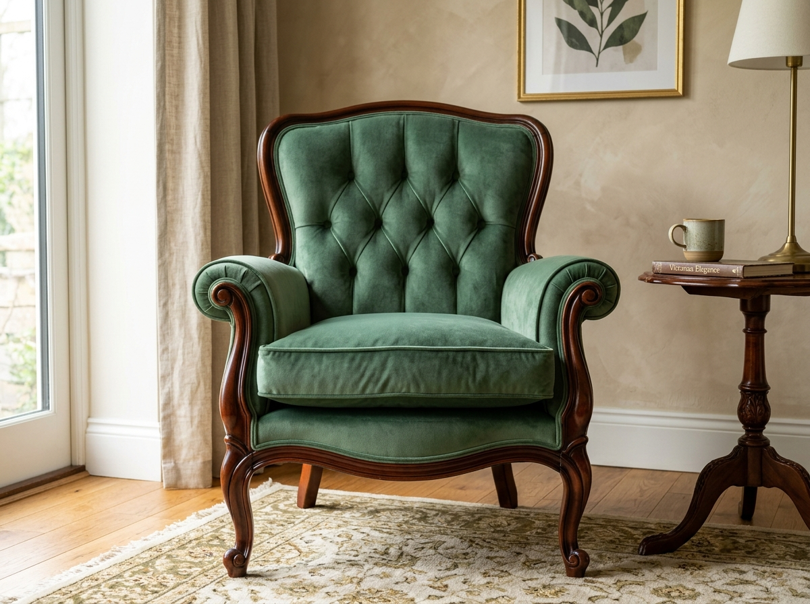
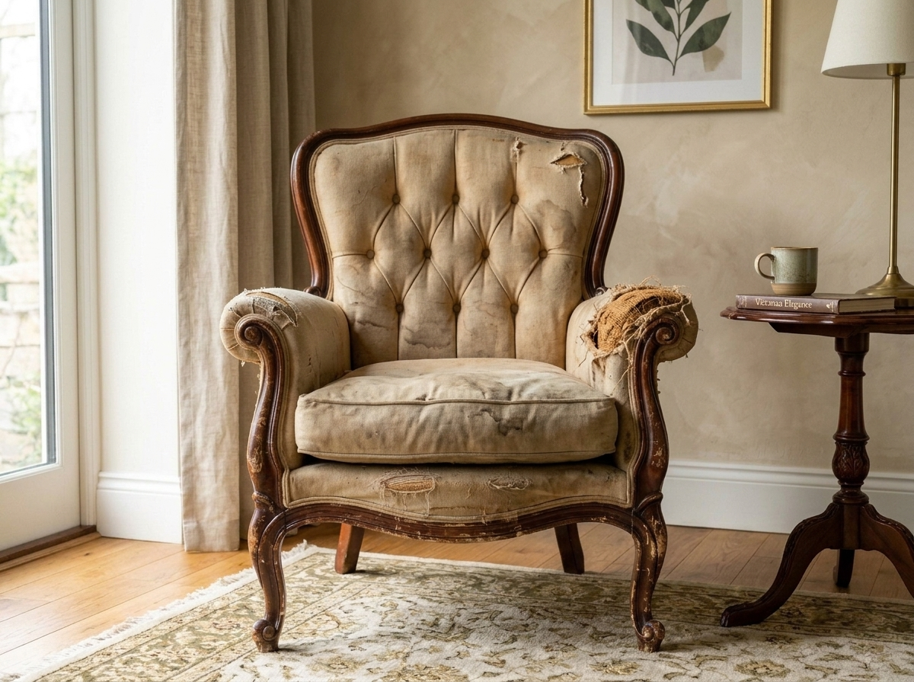
Stripped to the frame, re-sprung by hand and rebuilt with fresh foam, then finished in sage velvet with piped seams and a new welt base.

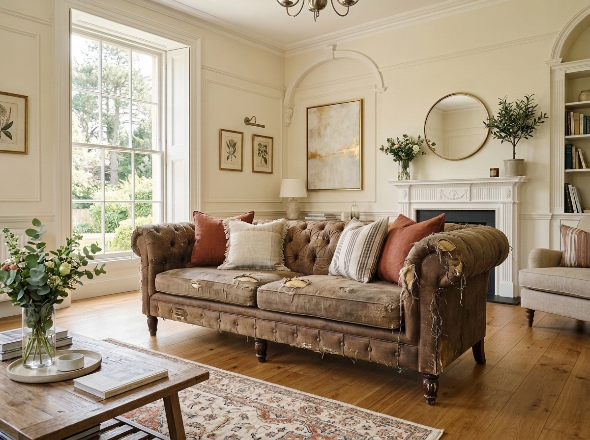
Complete strip-down with new webbing, springs and padding, fully re-covered in crushed teal velvet with tailored piped edges.

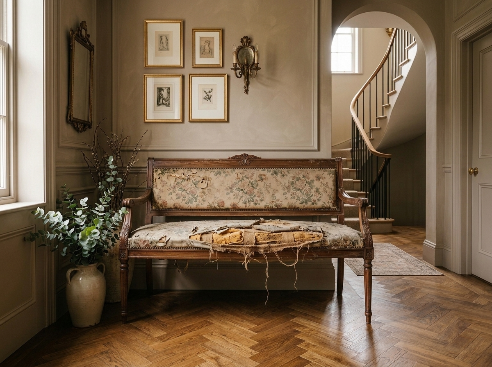
Frame re-glued and reinforced, deep foam seat built up and upholstered in emerald velvet with classic piped borders.
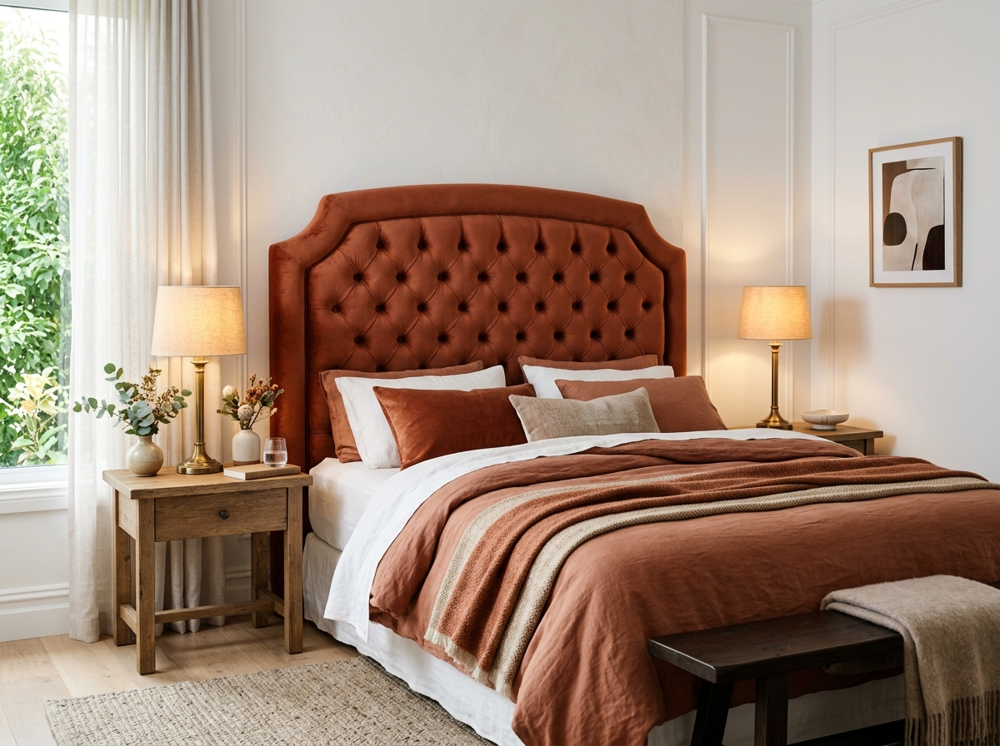
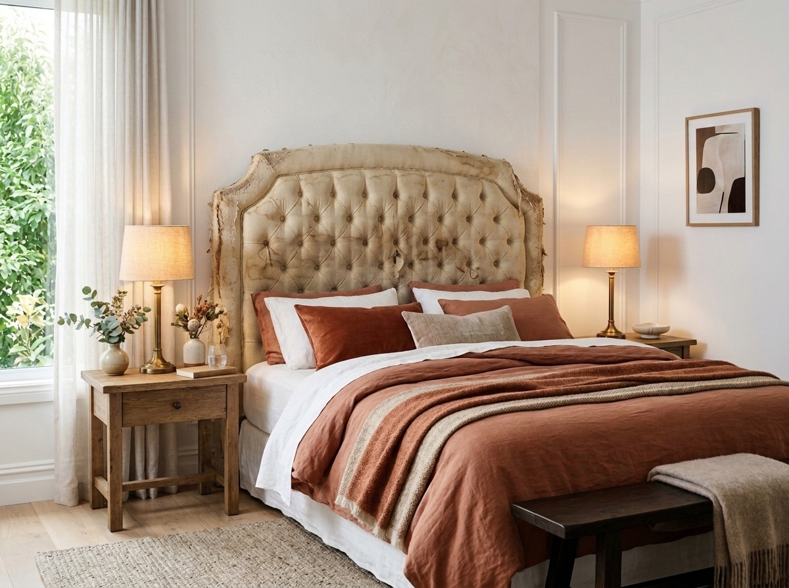
New made-to-measure base deep-buttoned entirely by hand and finished in terracotta linen with wall-mount fixings included.
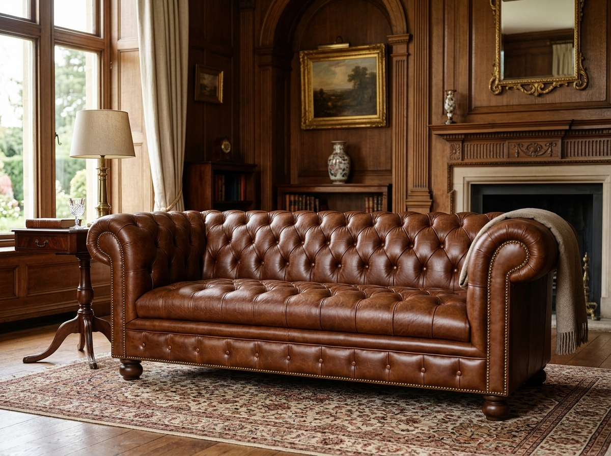
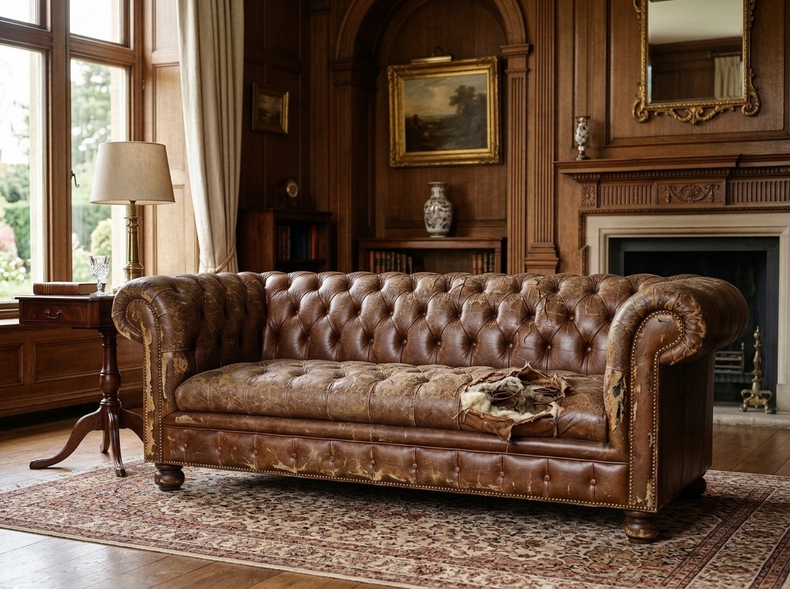
Full leather restoration — new suspension and padding with hand-applied aniline leather and a freshly buttoned front.

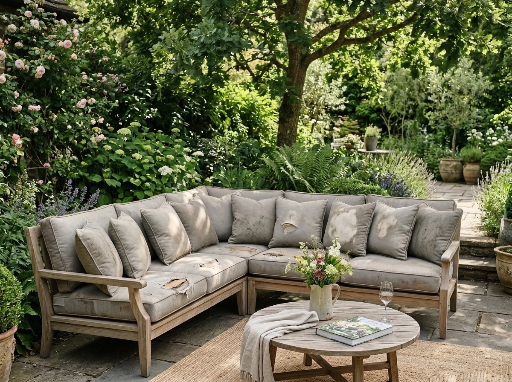
Worn pads replaced with quick-dry outdoor inserts and Sunbrella covers, piped with rust-proof ties for all-weather use.
Drag the slider across the image below to see our transformation results in full detail. This antique French Bergère armchair went from dilapidated, frayed heirloom to a magnificent royal navy velvet statement piece.
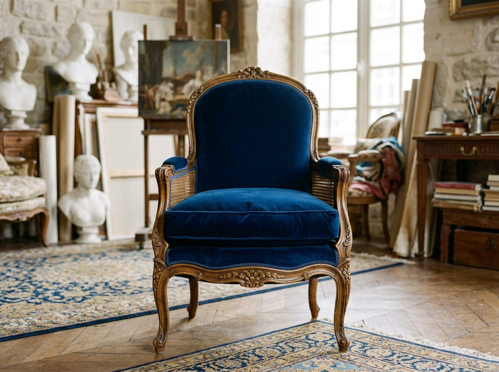
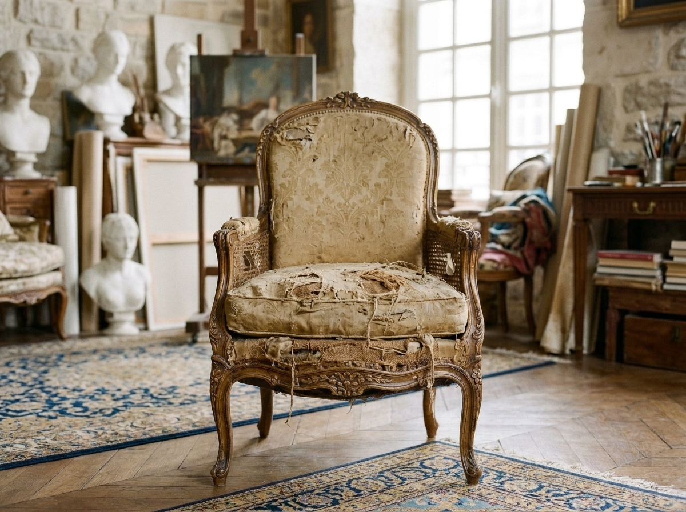